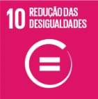

Sobre o Jogo
O jogo School Rivals é um jogo feito na Godot e se resume em um jogo de pegar pontos , os dois jogadores Luara e Pierre, tem que correr atrás de livros, o jogador que pega mais livros vencerá, o jogo terá poderes que ajudarão em pegar os livros. A única dificuldade que os jogadores terão vai ser cair para a fora do mapa, os buracos no chão, fazendo assim eles perderem pontos.Cada jogador ficou com um pouco mais rápido assim dificultando a movimentação.Na teoria sim, mas na prática não, os jogadores terão sua história mas isso não afetará no jogo, a única coisa da história que vai ter impacto vai ser a diferença financeira.Quando pierre pega um caderno ele vai ganha 100 pontos , já luara ganhara 50 , os únicos benefícios são para pierre , ele poderá pegar um raio e fica mais rápido ele terá uma passiva que ele perde menos pontos e ganha mais.

A mecânica do jogo mostra a do mundo todo realidade persistente no mundo real: a desigualdade entre homens e mulheres. Através dessa experiência lúdica e provocativa, queremos estimular a reflexão sobre esse problema e fomentar o debate sobre a busca por uma sociedade mais justa e igualitária.

Tema Escolhido
O nosso jogo aborda um dos 17 Objetivos de Desenvolvimento Sustentável (ODS) da ONU: ODS 10 – Redução das Desigualdades.
A desigualdade entre homens e mulheres existe até hoje e é um dos desafios mais urgentes da sociedade. Em diversas partes do mundo, mulheres recebem salários menores do que os homens mesmo ocupando os mesmos cargos e desempenhando as mesmas funções, trazendo assim o Feminismo.